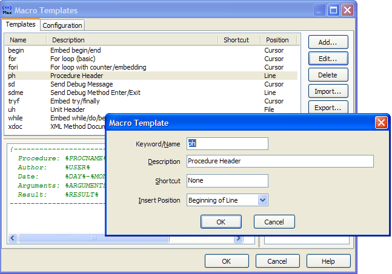

Macro Templates |
|
Macro Templates is an editor expert that allows text snippets to be quickly copied into the code editor and those snippets can contain any number of %-delimited macros that can insert the current date/time, user name, procedure name, unit name, clipboard contents, etc. For a full list, see the Substitution Macros topic. Note that some of the macros are only supported for Delphi source code. As an example, the following template would produce a Delphi unit header comment:
// Unit: %UNIT% // Purpose: | // Author: %USER% // Date: %DATETIME% // Version: 1.0
For each macro template you define, you can configure the position where template will be inserted. It can be the current cursor position, the start of the unit, or the beginning of the current line in the editor. You can also configure a shortcut to activate your most frequently used templates. The "|" (pipe) character can be used inside your templates to define the desired cursor position after a template is inserted. The screenshot below shows the configuration interface for Macro Templates:  You can also define a list of units that should be present in the interface or implementation for each template to function. If the unit you define is not already used by the unit where the template is being inserted, the defined units are added to the appropriate uses clause. Right-click the implementation/interface list to add/delete items from the unit lists. Note that this feature is only supported in Delphi source code.
On the Configuration tab, you can enter your name, initials, and an auto-incremented sequence number to use in generated templates (you could use it to create unique error numbers, etc.). The values you type there can be substituted into your templates using the Substitution Macros (%PROGRAMMERNAME%, etc.). You can also configure your templates to be able to expand after pressing space and a short delay.
One time-saving method of using the macro templates is to create macros using %SELECTION% that allow you to embed the selected lines inside a begin/end, try/finally, try/except, region, or any other type of block.
There are several methods available to insert templates into the editor:
•Press the shortcut key you have assigned to the specific template you want to insert. •Type the template name in the editor and press the shortcut assigned to the Macro Templates expert. If your typed name matches a template name, the template is inserted. If there is not a match, or no name was typed, the dialog described below is shown. The template name you typed in the editor will only be deleted if it matches the inserted template name. •Press the shortcut assigned to the Macro Templates expert and choose the template from the list in the resulting dialog. The dialog supports incremental searching through your templates. •Enable the option to expand templates when pressing space in the Configuration tab. Type the template name and press space. After your configured delay, the template will be inserted into the editor and the template name you typed will be automatically deleted.
Note: Starting with BDS 2006, you may prefer to use the IDE's built-in live templates, which have added features such as ordered code insert points and custom scripting within the templates.
Note: Please see C++ and C# Compatibility for some limitations with those file types.
|